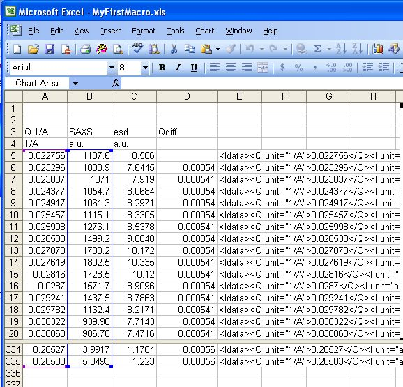
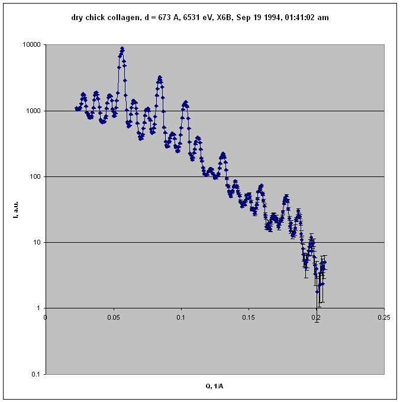
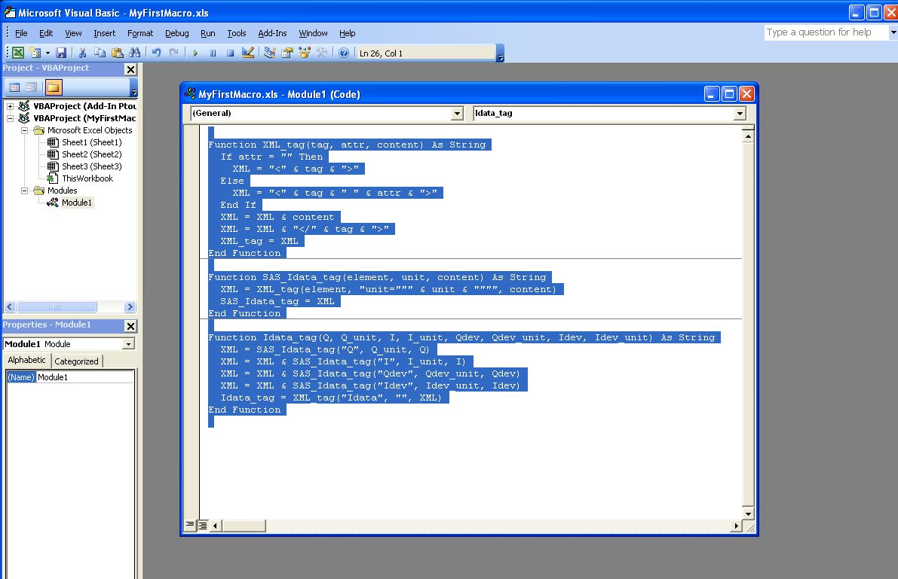

To demonstrate how to get SAS data into the XML standard format, consider this set of SAXS data collected at the National Synchrotron Light Source, Brookhaven National Laboratory, using a SAXS camera set up temporarily at beam line X6B (operated by the Materials Science Division, Argonne National Lab).
The sample was dry chick collagen. (Thanks to Malcolm Capel, NSLS beam line X12C for the sample.)
collagen SAXS in Excel table
collagen SAXS in Excel chart (log-log)
The raw data was collected on a linear position-sensitive detector and reduced to columns of \(Q\), \(I\), and \(Idev\) (estimated standard deviation of \(I\)).
The only metadata available for this data (without resorting to digging through piles of old notebooks) was obtained from the headers of two files:
There is enough information to fulfill the minimum requirements of the 1D standard file format and also make an excellent example of a minimal canSAS reduced 1-D SAS data file in XML.
The procedure to create the XML data file by hand is described next.
It is easiest to copy a template rather than start from an empty file. Copy the cansas1d.xml file (http://www.cansas.org/svn/1dwg/trunk/examples/cansas1d.xml) into your working directory and rename it to collagen.xml.
It is easier to see the metadata in the XML file before you enter the SAXS data into the file. With the brief metadata available, most of the other lines in cansas1d.xml can be eliminated. This will result in a file that looks like the next example.
collagen.xml with metadata but before data lines are added
Microsoft Excel is used here to convert the table of SAXS data into the required lines of XML for the standard. Some may prefer to use a cell formula but here, we develop a bit of Excel Macro code to clarify our procedure.
Within Excel, with the SAXS data in columns as shown in the Excel table above, let’s define the macros for our use. In Excel, type <alt><F11> to open the macro editing window.
Microsoft Excel macro to format the Idata lines
Function XML_tag(tag, attr, content) As String If attr = "" Then XML = "<" & tag & ">" Else XML = "<" & tag & " " & attr & ">" End If XML = XML & content XML = XML & "</" & tag & ">" XML_tag = XML End Function Function SAS_Idata_tag(element, unit, content) As String XML = XML_tag(element, "unit=""" & unit & """", content) SAS_Idata_tag = XML End Function Function Idata_tag(Q, Q_unit, I, I_unit, Idev, Idev_unit) As String XML = SAS_Idata_tag("Q", Q_unit, Q) XML = XML & SAS_Idata_tag("I", I_unit, I) XML = XML & SAS_Idata_tag("Idev", Idev_unit, Idev) Idata_tag = XML_tag("Idata", "", XML) End Function
Your window will look similar to this one when you copy/paste the above example code: (Yes, my spreadsheet is called MyFirstMacro.xls)
case study: Collagen, SAXS data in Excel chart
Now close the macro editing window and return to the SAXS data in the spreadsheet.
Move to spreadsheet cell E5 and enter this formula:
=IDATA_tag(A5,$A$4,B5,$B$4,C5,$C$4)
Copy it down all rows in column E through cell E335.
Select cells E5:E335 and copy to clipboard, then paste into collagen.xml document inside the SASdata element where you see the XML comment.
A nicely-formatted display version of the final result can be viewed through the TRAC repository:
So you think you have an XML file? Let’s validate it using the procedure from the documentation. All the instructions are in the Validation of XML against the Schema section. No sense in repeating them here.